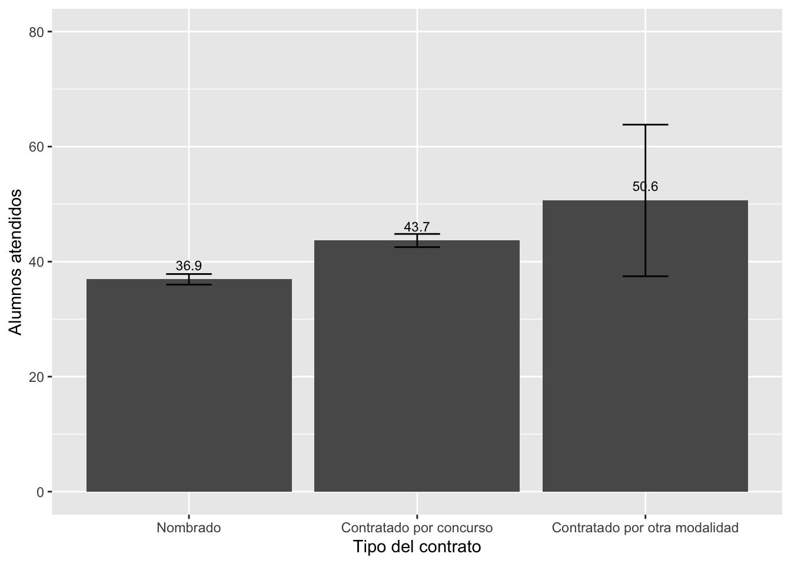
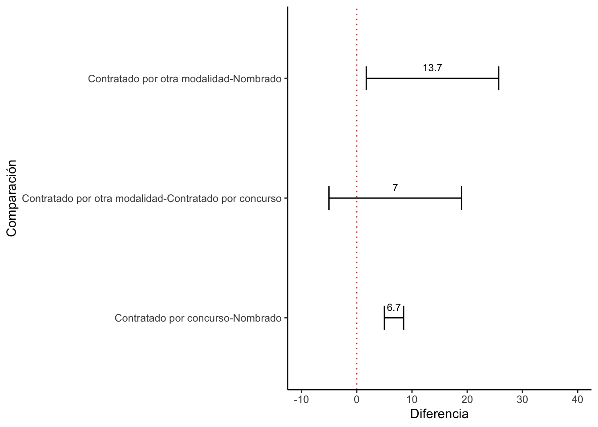

Test de ANOVA
El test de ANOVA sirve para comparar la media de una variable
dependiente numérica entre grupos de una variable de tipo factor (con
más de 2 grupos).
Este test parte teóricamente de la distribución general de la
variable numérica, la que tiene una media poblacional \(\mu\), y compara esta media poblacional
general, con las medias poblacionales de la variable numérica por cada
grupo de la variable de factor con n grupos, \(\mu_1...\mu_2...\mu_3...\mu_n\).

Esta prueba se basa en la distribución F y propone la siguiente
hipótesis nula para la comparación de una variable numérica X entre n
grupos de la variable de factor.
\[
H0: \mu_{x1} = \mu_{x2} = \mu_{x1} =...= \mu_{xn}
\]
La hipótesis alternativa que propone es que al menos una media
poblacional de un grupo es diferente. Es decir, si se rechaza la H0,
quizá todas las medias poblacionales entre grupos sean distintas, quizá
algunas o quizá solo una difiere de las otras.
Esta prueba se basa en una comparación entre la variabilidad entre
(between) y la variabilidad intra (within).
Variabilidad entre
La variabilidad entre se refiere a la comparación de la media
muestral grupal \(\overline{X}_1\) y la
media general \(\overline{X}\).
Se entiende como un promedio ponderado de las distancias \(\overline{X_g}-\overline{X}\).
Para evitar que sea una distancia negativa se eleva al cuadrado
\((\overline{X_g}-\overline{X})^2\).
Se pondera por el número de observaciones de cada grupo \(n_g*(\overline{X_g}-\overline{X})^2\).
Se suma estas cantidades de cada grupo: \(\sum
n_g*(\overline{X_g}-\overline{X})^2\).
Esa suma se divide entre los grados de libertad g-1 (número de
grupos -1).
Variabilidad intra
Es la variabilidad entre las observaciones de cada grupo con su
media grupal.
Se entiende como el cálculo de la desviación estándar en cada
grupo.
Se calcula \(\sum
(X_i-\overline{X_g})^2\) en cada grupo. Estas sumatorias se
suman.
Esa suma total se divide entre los grados de libertad N-g (total
de observaciones - número de grupos).
Estadístico de la prueba F
- Se calcula como F = estimado de la variabilidad entre / estimado de
la variabilidad intra
El estadístico F se hace grande cuando: hay mayor variabilidad entre
y/o menos variabilidad intra.
El estadístico F se hace pequeño cuando: hay menor variabilidad entre
y/o mayor variabilidad intra.
A medida que el estadístico F es más grande, se ubica más en la cola
de la distribución, por lo que el p-value será menor, con los que se
tendría una mayor evidencia en contra de la H0 sobre la igualdad de
medias poblacionales.

Por lo tanto se concluiría que al menos una de las medias grupales
sería significativamente diferente de las otras medias grupales. El tema
es que la prueba de ANOVA no llega hasta ahí, no nos indica qué medias
son diferentes. Para saber qué media(s) es(son) diferente(s) se tiene
que hacer un test posterior.
Post hoc: Test de Tukey
Este test sirve para analizar qué diferencias entre grupos son
significativas. Es decir, reporta todos los emparejamientos posibles
entre grupos y en cada pareja calcula una prueba t de diferencia de
medias y la reporta.
Ejemplo 1 para una variable numérica entre 2+ grupos: ENDO
library(rio)
endo2020 = import("bases/ENDO_REMOTO_2020.dta")
Si queremos evaluar si existen diferencias entre el número promedio
de alumnos con los que trabaja un profesor entre tipos de profesores
(nombrados, contratados con concurso o contratados con otra modalidad),
se puede usar ANOVA.
Primero se tiene que factorizar la variable tipo de profesor
(P1_7).
library(dplyr)
library(tidyverse)
endo2020 = endo2020 %>%
mutate(tipo = factor(P1_7, labels=c("Nombrado", "Contratado por concurso",
"Contratado por otra modalidad")))
alumxtipo = endo2020 %>%
group_by(tipo) %>%
summarize(media = mean(P1_6, na.rm = T), desv = sd(P1_6, na.rm = T))
alumxtipo
## # A tibble: 4 × 3
## tipo media desv
## <fct> <dbl> <dbl>
## 1 Nombrado 36.9 48.0
## 2 Contratado por concurso 43.7 53.6
## 3 Contratado por otra modalidad 50.6 66.1
## 4 <NA> NaN NA
alumxtipo = alumxtipo[-4, ]
Para tener una descripción completa entre los 3 grupos, también se
puede usar:
library(lsr)
ICalumxtipo = endo2020 %>%
group_by(tipo) %>%
summarise(media = mean(P1_6, na.rm=T),
liminf = ciMean(P1_6, na.rm=T)[1],
limsup = ciMean(P1_6, na.rm=T)[2]
)
ICalumxtipo
## # A tibble: 4 × 4
## tipo media liminf limsup
## <fct> <dbl> <dbl> <dbl>
## 1 Nombrado 36.9 36.0 37.8
## 2 Contratado por concurso 43.7 42.5 44.8
## 3 Contratado por otra modalidad 50.6 37.5 63.8
## 4 <NA> NaN NA NA
ICalumxtipo = ICalumxtipo[-4, ]
¿Qué conclusiones “informales” se pueden sacar del gráfico?
library(ggplot2)
graf1 = ggplot(ICalumxtipo, aes(x=tipo, y=media))+
geom_bar(stat="identity")+
geom_errorbar(aes(ymin=liminf, ymax=limsup), width=0.2)+
geom_text(aes(label=paste(round(media, 1))), vjust=-1, size=3)+
xlab("Tipo del contrato") + ylab("Alumnos atendidos")+
ylim(0, 80)
graf1

Esta observación visual se tiene que confirmar con la prueba de
ANOVA. Para esto se usa el comando aov para crear un objeto
“anova1” que luego se describe con summary.
anova1 = aov(endo2020$P1_6~endo2020$tipo)
summary(anova1)
## Df Sum Sq Mean Sq F value Pr(>F)
## endo2020$tipo 2 223104 111552 43.48 <2e-16 ***
## Residuals 18947 48614075 2566
## ---
## Signif. codes: 0 '***' 0.001 '**' 0.01 '*' 0.05 '.' 0.1 ' ' 1
## 9266 observations deleted due to missingness
Con la prueba de ANOVA y dado que el p-value es menor a 0.05, se
puede rechazar la H0. Es decir, se afirma la Ha de que al menos una de
las diferencias es significativa. ANOVA no nos indica cuál es la(s)
diferencia(s) significativa(s).
Para evaluar las diferencias, se corre la prueba de Tukey para
analizar cada emparejamiento. Esto se hace con el comando
TukeyHSD en el que se inserta el objeto “anova1” y con el
cual se crea un objeto “compara”.
compara = TukeyHSD(anova1)
compara
## Tukey multiple comparisons of means
## 95% family-wise confidence level
##
## Fit: aov(formula = endo2020$P1_6 ~ endo2020$tipo)
##
## $`endo2020$tipo`
## diff lwr
## Contratado por concurso-Nombrado 6.743547 5.003923
## Contratado por otra modalidad-Nombrado 13.713640 1.724766
## Contratado por otra modalidad-Contratado por concurso 6.970093 -5.032398
## upr p adj
## Contratado por concurso-Nombrado 8.483171 0.0000000
## Contratado por otra modalidad-Nombrado 25.702515 0.0200876
## Contratado por otra modalidad-Contratado por concurso 18.972585 0.3615009
Se observa que los resultados comprueban las observaciones del
gráfico. Cada emparejamiento tiene un valor de la diferencia de medias
“diff”, un límite inferior “lwr” y límite superior “upr” del intervalo
de confianza de esa diferencia y un p-value “p adj”. Este último valor
es el que se evalúa para saber si el emparejamiento tiene una diferencia
estadísticamente significativa. Se observa que el emparejamiento
“Contratado por concurso-Nombrado” tiene un p-value muy pequeño (no es
cero, solo faltan decimales), por lo que podemos rechazar la Ho y
afirmar que sí existen diferencias en el número de alumnos con los que
trabajan estos tipo de profesores.
El emparejamiento entre “Contratado por otra modalidad-Nombrado”
tiene un p-value de 0.02, que es menor que 0.05, por lo que concluimos
que también existen diferencias en el número de alumnos promedio con el
que trabajan estos tipos de profesores.
El emparejamiento “Contratado por otra modalidad-Contratado por
concurso” tiene un p-value = 0.36 que es mayor que 0.05, por lo que no
se puede concluir que haya diferencias en el promedio de alumnos con los
que trabajan estos tipos de profesores.
Este gráfico se puede reproducir con la librería ggplot.
Para esto, primero, se tiene que transformar el objeto “compara” (que es
una lista) en un dataframe, con el comando as.data.frame y
se crea un nuevo objeto “compara.df”, que tiene los valores que
requerimos para graficar, excepto que el nombre de las comparaciones
esta como nombre de las filas y no como variable. Para incluir las
comparaciones como una variable se usa el comando rownames
y se crea una nueva columna compara.df$compara.
compara.df = as.data.frame(compara[1])
compara.df$compara = rownames(compara.df)
Con este dataframe, podemos usar la librería ggplot para
graficar los intervalos de confianza de las diferencias de medias.
Aquellos emparejamientos cuyas líneas no crucen la línea vertical del
cero, se puede decir que hay diferencias estadísticamente
significativas.
graf2 = ggplot(compara.df, aes(x=compara, y=endo2020.tipo.diff))+
geom_errorbar(aes(ymin=endo2020.tipo.lwr, ymax=endo2020.tipo.upr), width=0.2)+
geom_text(aes(label=paste(round(endo2020.tipo.diff, 1))), vjust=-1, size=3)+
xlab("Comparación") + ylab("Diferencia")+
ylim(-10, 40) +
coord_flip() +
geom_hline(yintercept = 0, color = "red", linetype="dotted") +
theme_classic()
graf2

NOTA: Hay ocasiones como esta en que la prueba de ANOVA indica que
existe un emparejamiento con una diferencia significativa, y luego,
cuando se evalúan los emparejamientos, no se observa esa diferencia. Eso
es debido a que cada emparejamiento de evalúa mediante la prueba t de
manera autónoma.
LS0tCnRpdGxlOiAiQ2xhc2UgNyIKYXV0aG9yOiAiQXJ0dXJvIE1hbGRvbmFkbyIKZGF0ZTogIjIxLzEwLzIwMjQiCm91dHB1dDoKICBodG1sX2RvY3VtZW50OgogICAgdG9jOiB0cnVlCiAgICB0b2NfZmxvYXQ6IHRydWUKICAgIGNvbGxhcHNlZDogZmFsc2UKICAgIG51bWJlcl9zZWN0aW9uczogZmFsc2UKICAgIHRvY19kZXB0aDogMQogICAgY29kZV9kb3dubG9hZDogdHJ1ZQogICAgdGhlbWU6IGNvc21vCiAgICBoaWdobGlnaHQ6IHRleHRtYXRlCmVkaXRvcl9vcHRpb25zOgogIG1hcmtkb3duOgogICAgd3JhcDogc2VudGVuY2UKYmlibGlvZ3JhcGh5OiByZWZlcmVuY2VzLmJpYgotLS0KCmBgYHtyIHNldHVwLCBpbmNsdWRlPUZBTFNFfQprbml0cjo6b3B0c19jaHVuayRzZXQoZWNobyA9IFRSVUUpCmBgYAoKIyBJbnRyb2R1Y2Npw7NuCgpIYXN0YSBlbCBtb21lbnRvIHNlIGhhIHZpc3RvIGxhIHBydWViYSB0IHBhcmEgY29tcGFyYXIgbWVkaWFzIGRlIHNvbG8gMiBncnVwb3MuCkVuIGVzdGEgc2VjY2nDs24gdmVyZW1vcyBjw7NtbyBleHBhbmRpciBsYSBjb21wYXJhY2nDs24gcGFyYSB2YXJpYXMgbWVkaWFzIHVzYW5kbyBvdHJhIHBydWViYSBkZSBpbmZlcmVuY2lhLgpFcyBkZWNpciwgc2UgYnVzY2EgYW5hbGl6YXIgbGEgcmVsYWNpw7NuIGVudHJlIHVuYSB2YXJpYWJsZSBkZXBlbmRpZW50ZSBjdWFudGl0YXRpdmEgKG8gbnVtw6lyaWNhKSB5IHVuYSB2YXJpYWJsZSBpbmRlcGVuZGllbnRlIGNhdGVnw7NyaWNhIChvIGRlIGZhY3RvcikuCgpMYSBtZWRpYSBkZSBsYSB2YXJpYWJsZSBkZXBlbmRpZW50ZSBlcyBjb21wYXJhZGEgcGFyYSBjYWRhIGdydXBvIGRlIGxhIHZhcmlhYmxlIGluZGVwZW5kaWVudGUgY2F0ZWfDs3JpY2EsIHTDrXBpY2FtZW50ZSB1bmEgdmFyaWFibGUgbm9taW5hbC4KUG9yIGVqZW1wbG86CgotICAgSW5ncmVzb3MgZW50cmUgZ3J1cG9zIMOpdG5pY29zLgoKLSAgIENSQUVTVCBlbnRyZSBhbHVtbm9zIGRlIGVzcGVjaWFsaWRhZGVzIGRlIENpZW5jaWFzIFNvY2lhbGVzLgoKLSAgIFBvc2ljacOzbiBpZGVvbMOzZ2ljYSBlbnRyZSBzaW1wYXRpemFudGVzIGRlIGRpZmVyZW50ZXMgcGFydGlkb3MuCgpQYXJhIHBvZGVyIGhhY2VyIGVzdGFzIGNvbXBhcmFjaW9uZXMgZW50cmUgdmFyaW9zIGdydXBvcyB2YW1vcyBhIHVzYXIgZWwgdGVzdCBkZWwgQU5PVkEKCiMgVGVzdCBkZSBBTk9WQQoKRWwgdGVzdCBkZSBBTk9WQSBzaXJ2ZSBwYXJhIGNvbXBhcmFyIGxhIG1lZGlhIGRlIHVuYSB2YXJpYWJsZSBkZXBlbmRpZW50ZSBudW3DqXJpY2EgZW50cmUgZ3J1cG9zIGRlIHVuYSB2YXJpYWJsZSBkZSB0aXBvIGZhY3RvciAoY29uIG3DoXMgZGUgMiBncnVwb3MpLgoKRXN0ZSB0ZXN0IHBhcnRlIHRlw7NyaWNhbWVudGUgZGUgbGEgZGlzdHJpYnVjacOzbiBnZW5lcmFsIGRlIGxhIHZhcmlhYmxlIG51bcOpcmljYSwgbGEgcXVlIHRpZW5lIHVuYSBtZWRpYSBwb2JsYWNpb25hbCAkXG11JCwgeSBjb21wYXJhIGVzdGEgbWVkaWEgcG9ibGFjaW9uYWwgZ2VuZXJhbCwgY29uIGxhcyBtZWRpYXMgcG9ibGFjaW9uYWxlcyBkZSBsYSB2YXJpYWJsZSBudW3DqXJpY2EgcG9yIGNhZGEgZ3J1cG8gZGUgbGEgdmFyaWFibGUgZGUgZmFjdG9yIGNvbiBuIGdydXBvcywgJFxtdV8xLi4uXG11XzIuLi5cbXVfMy4uLlxtdV9uJC4KCiFbXShhbm92YTEucG5nKXt3aWR0aD0iNTM0In0KCkVzdGEgcHJ1ZWJhIHNlIGJhc2EgZW4gbGEgZGlzdHJpYnVjacOzbiBGIHkgcHJvcG9uZSBsYSBzaWd1aWVudGUgaGlww7N0ZXNpcyBudWxhIHBhcmEgbGEgY29tcGFyYWNpw7NuIGRlIHVuYSB2YXJpYWJsZSBudW3DqXJpY2EgWCBlbnRyZSBuIGdydXBvcyBkZSBsYSB2YXJpYWJsZSBkZSBmYWN0b3IuCgokJApIMDogXG11X3t4MX0gPSBcbXVfe3gyfSA9IFxtdV97eDF9ID0uLi49IFxtdV97eG59CiQkCgpMYSBoaXDDs3Rlc2lzIGFsdGVybmF0aXZhIHF1ZSBwcm9wb25lIGVzIHF1ZSBhbCBtZW5vcyB1bmEgbWVkaWEgcG9ibGFjaW9uYWwgZGUgdW4gZ3J1cG8gZXMgZGlmZXJlbnRlLgpFcyBkZWNpciwgc2kgc2UgcmVjaGF6YSBsYSBIMCwgcXVpesOhIHRvZGFzIGxhcyBtZWRpYXMgcG9ibGFjaW9uYWxlcyBlbnRyZSBncnVwb3Mgc2VhbiBkaXN0aW50YXMsIHF1aXrDoSBhbGd1bmFzIG8gcXVpesOhIHNvbG8gdW5hIGRpZmllcmUgZGUgbGFzIG90cmFzLgoKRXN0YSBwcnVlYmEgc2UgYmFzYSBlbiB1bmEgY29tcGFyYWNpw7NuIGVudHJlIGxhIHZhcmlhYmlsaWRhZCBlbnRyZSAoYmV0d2VlbikgeSBsYSB2YXJpYWJpbGlkYWQgaW50cmEgKHdpdGhpbikuCgojIyBWYXJpYWJpbGlkYWQgZW50cmUKCi0gICBMYSB2YXJpYWJpbGlkYWQgZW50cmUgc2UgcmVmaWVyZSBhIGxhIGNvbXBhcmFjacOzbiBkZSBsYSBtZWRpYSBtdWVzdHJhbCBncnVwYWwgJFxvdmVybGluZXtYfV8xJCB5IGxhIG1lZGlhIGdlbmVyYWwgJFxvdmVybGluZXtYfSQuCgotICAgU2UgZW50aWVuZGUgY29tbyB1biBwcm9tZWRpbyBwb25kZXJhZG8gZGUgbGFzIGRpc3RhbmNpYXMgJFxvdmVybGluZXtYX2d9LVxvdmVybGluZXtYfSQuCgotICAgUGFyYSBldml0YXIgcXVlIHNlYSB1bmEgZGlzdGFuY2lhIG5lZ2F0aXZhIHNlIGVsZXZhIGFsIGN1YWRyYWRvICQoXG92ZXJsaW5le1hfZ30tXG92ZXJsaW5le1h9KV4yJC4KCi0gICBTZSBwb25kZXJhIHBvciBlbCBuw7ptZXJvIGRlIG9ic2VydmFjaW9uZXMgZGUgY2FkYSBncnVwbyAkbl9nKihcb3ZlcmxpbmV7WF9nfS1cb3ZlcmxpbmV7WH0pXjIkLgoKLSAgIFNlIHN1bWEgZXN0YXMgY2FudGlkYWRlcyBkZSBjYWRhIGdydXBvOiAkXHN1bSBuX2cqKFxvdmVybGluZXtYX2d9LVxvdmVybGluZXtYfSleMiQuCgotICAgRXNhIHN1bWEgc2UgZGl2aWRlIGVudHJlIGxvcyBncmFkb3MgZGUgbGliZXJ0YWQgZy0xIChuw7ptZXJvIGRlIGdydXBvcyAtMSkuCgojIyBWYXJpYWJpbGlkYWQgaW50cmEKCi0gICBFcyBsYSB2YXJpYWJpbGlkYWQgZW50cmUgbGFzIG9ic2VydmFjaW9uZXMgZGUgY2FkYSBncnVwbyBjb24gc3UgbWVkaWEgZ3J1cGFsLgoKLSAgIFNlIGVudGllbmRlIGNvbW8gZWwgY8OhbGN1bG8gZGUgbGEgZGVzdmlhY2nDs24gZXN0w6FuZGFyIGVuIGNhZGEgZ3J1cG8uCgotICAgU2UgY2FsY3VsYSAkXHN1bSAoWF9pLVxvdmVybGluZXtYX2d9KV4yJCBlbiBjYWRhIGdydXBvLgogICAgRXN0YXMgc3VtYXRvcmlhcyBzZSBzdW1hbi4KCi0gICBFc2Egc3VtYSB0b3RhbCBzZSBkaXZpZGUgZW50cmUgbG9zIGdyYWRvcyBkZSBsaWJlcnRhZCBOLWcgKHRvdGFsIGRlIG9ic2VydmFjaW9uZXMgLSBuw7ptZXJvIGRlIGdydXBvcykuCgojIyBFc3RhZMOtc3RpY28gZGUgbGEgcHJ1ZWJhIEYKCi0gICBTZSBjYWxjdWxhIGNvbW8gRiA9IGVzdGltYWRvIGRlIGxhIHZhcmlhYmlsaWRhZCBlbnRyZSAvIGVzdGltYWRvIGRlIGxhIHZhcmlhYmlsaWRhZCBpbnRyYQoKRWwgZXN0YWTDrXN0aWNvIEYgc2UgaGFjZSBncmFuZGUgY3VhbmRvOiBoYXkgbWF5b3IgdmFyaWFiaWxpZGFkIGVudHJlIHkvbyBtZW5vcyB2YXJpYWJpbGlkYWQgaW50cmEuCgpFbCBlc3RhZMOtc3RpY28gRiBzZSBoYWNlIHBlcXVlw7FvIGN1YW5kbzogaGF5IG1lbm9yIHZhcmlhYmlsaWRhZCBlbnRyZSB5L28gbWF5b3IgdmFyaWFiaWxpZGFkIGludHJhLgoKQSBtZWRpZGEgcXVlIGVsIGVzdGFkw61zdGljbyBGIGVzIG3DoXMgZ3JhbmRlLCBzZSB1YmljYSBtw6FzIGVuIGxhIGNvbGEgZGUgbGEgZGlzdHJpYnVjacOzbiwgcG9yIGxvIHF1ZSBlbCBwLXZhbHVlIHNlcsOhIG1lbm9yLCBjb24gbG9zIHF1ZSBzZSB0ZW5kcsOtYSB1bmEgbWF5b3IgZXZpZGVuY2lhIGVuIGNvbnRyYSBkZSBsYSBIMCBzb2JyZSBsYSBpZ3VhbGRhZCBkZSBtZWRpYXMgcG9ibGFjaW9uYWxlcy4KCiFbXShhbm92YTIucG5nKXt3aWR0aD0iNTM0In0KClBvciBsbyB0YW50byBzZSBjb25jbHVpcsOtYSBxdWUgYWwgbWVub3MgdW5hIGRlIGxhcyBtZWRpYXMgZ3J1cGFsZXMgc2Vyw61hIHNpZ25pZmljYXRpdmFtZW50ZSBkaWZlcmVudGUgZGUgbGFzIG90cmFzIG1lZGlhcyBncnVwYWxlcy4KRWwgdGVtYSBlcyBxdWUgbGEgcHJ1ZWJhIGRlIEFOT1ZBIG5vIGxsZWdhIGhhc3RhIGFow60sIG5vIG5vcyBpbmRpY2EgcXXDqSBtZWRpYXMgc29uIGRpZmVyZW50ZXMuClBhcmEgc2FiZXIgcXXDqSBtZWRpYShzKSBlcyhzb24pIGRpZmVyZW50ZShzKSBzZSB0aWVuZSBxdWUgaGFjZXIgdW4gdGVzdCBwb3N0ZXJpb3IuCgojIyBQb3N0IGhvYzogVGVzdCBkZSBUdWtleQoKRXN0ZSB0ZXN0IHNpcnZlIHBhcmEgYW5hbGl6YXIgcXXDqSBkaWZlcmVuY2lhcyBlbnRyZSBncnVwb3Mgc29uIHNpZ25pZmljYXRpdmFzLgpFcyBkZWNpciwgcmVwb3J0YSB0b2RvcyBsb3MgZW1wYXJlamFtaWVudG9zIHBvc2libGVzIGVudHJlIGdydXBvcyB5IGVuIGNhZGEgcGFyZWphIGNhbGN1bGEgdW5hIHBydWViYSB0IGRlIGRpZmVyZW5jaWEgZGUgbWVkaWFzIHkgbGEgcmVwb3J0YS4KCiMgRWplbXBsbyAxIHBhcmEgdW5hIHZhcmlhYmxlIG51bcOpcmljYSBlbnRyZSAyKyBncnVwb3M6IEVORE8KCmBgYHtyIGJhc2UgZW5kbywgbWVzc2FnZT1GQUxTRSwgd2FybmluZz1GQUxTRX0KbGlicmFyeShyaW8pCmVuZG8yMDIwID0gaW1wb3J0KCJiYXNlcy9FTkRPX1JFTU9UT18yMDIwLmR0YSIpCmBgYAoKU2kgcXVlcmVtb3MgZXZhbHVhciBzaSBleGlzdGVuIGRpZmVyZW5jaWFzIGVudHJlIGVsIG7Dum1lcm8gcHJvbWVkaW8gZGUgYWx1bW5vcyBjb24gbG9zIHF1ZSB0cmFiYWphIHVuIHByb2Zlc29yIGVudHJlIHRpcG9zIGRlIHByb2Zlc29yZXMgKG5vbWJyYWRvcywgY29udHJhdGFkb3MgY29uIGNvbmN1cnNvIG8gY29udHJhdGFkb3MgY29uIG90cmEgbW9kYWxpZGFkKSwgc2UgcHVlZGUgdXNhciBBTk9WQS4KClByaW1lcm8gc2UgdGllbmUgcXVlIGZhY3Rvcml6YXIgbGEgdmFyaWFibGUgdGlwbyBkZSBwcm9mZXNvciAoUDFfNykuCgpgYGB7ciBtZXNzYWdlPUZBTFNFLCB3YXJuaW5nPUZBTFNFfQpsaWJyYXJ5KGRwbHlyKQpsaWJyYXJ5KHRpZHl2ZXJzZSkKZW5kbzIwMjAgPSBlbmRvMjAyMCAlPiUKICBtdXRhdGUodGlwbyA9IGZhY3RvcihQMV83LCBsYWJlbHM9YygiTm9tYnJhZG8iLCAiQ29udHJhdGFkbyBwb3IgY29uY3Vyc28iLAogICAgICAgICAgICAgICAgICAgICAgICAgICAgICAgICAgICAgICJDb250cmF0YWRvIHBvciBvdHJhIG1vZGFsaWRhZCIpKSkKYGBgCgpgYGB7cn0KYWx1bXh0aXBvID0gZW5kbzIwMjAgJT4lIAogIGdyb3VwX2J5KHRpcG8pICU+JQogIHN1bW1hcml6ZShtZWRpYSA9IG1lYW4oUDFfNiwgbmEucm0gPSBUKSwgZGVzdiA9IHNkKFAxXzYsIG5hLnJtID0gVCkpCmFsdW14dGlwbwpgYGAKCmBgYHtyfQphbHVteHRpcG8gPSBhbHVteHRpcG9bLTQsIF0KYGBgCgpQYXJhIHRlbmVyIHVuYSBkZXNjcmlwY2nDs24gY29tcGxldGEgZW50cmUgbG9zIDMgZ3J1cG9zLCB0YW1iacOpbiBzZSBwdWVkZSB1c2FyOgoKYGBge3J9CmxpYnJhcnkobHNyKQpJQ2FsdW14dGlwbyA9IGVuZG8yMDIwICU+JQogIGdyb3VwX2J5KHRpcG8pICU+JQogIHN1bW1hcmlzZShtZWRpYSA9IG1lYW4oUDFfNiwgbmEucm09VCksCiAgICAgICAgICAgIGxpbWluZiA9IGNpTWVhbihQMV82LCBuYS5ybT1UKVsxXSwKICAgICAgICAgICAgbGltc3VwID0gY2lNZWFuKFAxXzYsIG5hLnJtPVQpWzJdCiAgICAgICAgICAgICkKSUNhbHVteHRpcG8KYGBgCgpgYGB7cn0KSUNhbHVteHRpcG8gPSBJQ2FsdW14dGlwb1stNCwgXQpgYGAKCsK/UXXDqSBjb25jbHVzaW9uZXMgImluZm9ybWFsZXMiIHNlIHB1ZWRlbiBzYWNhciBkZWwgZ3LDoWZpY28/CgpgYGB7cn0KbGlicmFyeShnZ3Bsb3QyKQpncmFmMSA9IGdncGxvdChJQ2FsdW14dGlwbywgYWVzKHg9dGlwbywgeT1tZWRpYSkpKwogIGdlb21fYmFyKHN0YXQ9ImlkZW50aXR5IikrCiAgZ2VvbV9lcnJvcmJhcihhZXMoeW1pbj1saW1pbmYsIHltYXg9bGltc3VwKSwgd2lkdGg9MC4yKSsKICBnZW9tX3RleHQoYWVzKGxhYmVsPXBhc3RlKHJvdW5kKG1lZGlhLCAxKSkpLCB2anVzdD0tMSwgc2l6ZT0zKSsKICB4bGFiKCJUaXBvIGRlbCBjb250cmF0byIpICsgeWxhYigiQWx1bW5vcyBhdGVuZGlkb3MiKSsKICB5bGltKDAsIDgwKQpncmFmMQpgYGAKCkVzdGEgb2JzZXJ2YWNpw7NuIHZpc3VhbCBzZSB0aWVuZSBxdWUgY29uZmlybWFyIGNvbiBsYSBwcnVlYmEgZGUgQU5PVkEuClBhcmEgZXN0byBzZSB1c2EgZWwgY29tYW5kbyBgYW92YCBwYXJhIGNyZWFyIHVuIG9iamV0byAiYW5vdmExIiBxdWUgbHVlZ28gc2UgZGVzY3JpYmUgY29uIGBzdW1tYXJ5YC4KCmBgYHtyIGFub3ZhIGFsdW1ub3MgeCB0aXBvfQphbm92YTEgPSBhb3YoZW5kbzIwMjAkUDFfNn5lbmRvMjAyMCR0aXBvKQpzdW1tYXJ5KGFub3ZhMSkKYGBgCgpDb24gbGEgcHJ1ZWJhIGRlIEFOT1ZBIHkgZGFkbyBxdWUgZWwgcC12YWx1ZSBlcyBtZW5vciBhIDAuMDUsIHNlIHB1ZWRlIHJlY2hhemFyIGxhIEgwLgpFcyBkZWNpciwgc2UgYWZpcm1hIGxhIEhhIGRlIHF1ZSBhbCBtZW5vcyB1bmEgZGUgbGFzIGRpZmVyZW5jaWFzIGVzIHNpZ25pZmljYXRpdmEuCkFOT1ZBIG5vIG5vcyBpbmRpY2EgY3XDoWwgZXMgbGEocykgZGlmZXJlbmNpYShzKSBzaWduaWZpY2F0aXZhKHMpLgoKUGFyYSBldmFsdWFyIGxhcyBkaWZlcmVuY2lhcywgc2UgY29ycmUgbGEgcHJ1ZWJhIGRlIFR1a2V5IHBhcmEgYW5hbGl6YXIgY2FkYSBlbXBhcmVqYW1pZW50by4KRXN0byBzZSBoYWNlIGNvbiBlbCBjb21hbmRvIGBUdWtleUhTRGAgZW4gZWwgcXVlIHNlIGluc2VydGEgZWwgb2JqZXRvICJhbm92YTEiIHkgY29uIGVsIGN1YWwgc2UgY3JlYSB1biBvYmpldG8gImNvbXBhcmEiLgoKYGBge3IgVHVrZXkgYWx1bW5vcyB4IHRpcG99CmNvbXBhcmEgPSBUdWtleUhTRChhbm92YTEpCmNvbXBhcmEKYGBgCgpTZSBvYnNlcnZhIHF1ZSBsb3MgcmVzdWx0YWRvcyBjb21wcnVlYmFuIGxhcyBvYnNlcnZhY2lvbmVzIGRlbCBncsOhZmljby4KQ2FkYSBlbXBhcmVqYW1pZW50byB0aWVuZSB1biB2YWxvciBkZSBsYSBkaWZlcmVuY2lhIGRlIG1lZGlhcyAiZGlmZiIsIHVuIGzDrW1pdGUgaW5mZXJpb3IgImx3ciIgeSBsw61taXRlIHN1cGVyaW9yICJ1cHIiIGRlbCBpbnRlcnZhbG8gZGUgY29uZmlhbnphIGRlIGVzYSBkaWZlcmVuY2lhIHkgdW4gcC12YWx1ZSAicCBhZGoiLgpFc3RlIMO6bHRpbW8gdmFsb3IgZXMgZWwgcXVlIHNlIGV2YWzDumEgcGFyYSBzYWJlciBzaSBlbCBlbXBhcmVqYW1pZW50byB0aWVuZSB1bmEgZGlmZXJlbmNpYSBlc3RhZMOtc3RpY2FtZW50ZSBzaWduaWZpY2F0aXZhLgpTZSBvYnNlcnZhIHF1ZSBlbCBlbXBhcmVqYW1pZW50byAiQ29udHJhdGFkbyBwb3IgY29uY3Vyc28tTm9tYnJhZG8iIHRpZW5lIHVuIHAtdmFsdWUgbXV5IHBlcXVlw7FvIChubyBlcyBjZXJvLCBzb2xvIGZhbHRhbiBkZWNpbWFsZXMpLCBwb3IgbG8gcXVlIHBvZGVtb3MgcmVjaGF6YXIgbGEgSG8geSBhZmlybWFyIHF1ZSBzw60gZXhpc3RlbiBkaWZlcmVuY2lhcyBlbiBlbCBuw7ptZXJvIGRlIGFsdW1ub3MgY29uIGxvcyBxdWUgdHJhYmFqYW4gZXN0b3MgdGlwbyBkZSBwcm9mZXNvcmVzLgoKRWwgZW1wYXJlamFtaWVudG8gZW50cmUgIkNvbnRyYXRhZG8gcG9yIG90cmEgbW9kYWxpZGFkLU5vbWJyYWRvIiB0aWVuZSB1biBwLXZhbHVlIGRlIDAuMDIsIHF1ZSBlcyBtZW5vciBxdWUgMC4wNSwgcG9yIGxvIHF1ZSBjb25jbHVpbW9zIHF1ZSB0YW1iacOpbiBleGlzdGVuIGRpZmVyZW5jaWFzIGVuIGVsIG7Dum1lcm8gZGUgYWx1bW5vcyBwcm9tZWRpbyBjb24gZWwgcXVlIHRyYWJhamFuIGVzdG9zIHRpcG9zIGRlIHByb2Zlc29yZXMuCgpFbCBlbXBhcmVqYW1pZW50byAiQ29udHJhdGFkbyBwb3Igb3RyYSBtb2RhbGlkYWQtQ29udHJhdGFkbyBwb3IgY29uY3Vyc28iIHRpZW5lIHVuIHAtdmFsdWUgPSAwLjM2IHF1ZSBlcyBtYXlvciBxdWUgMC4wNSwgcG9yIGxvIHF1ZSBubyBzZSBwdWVkZSBjb25jbHVpciBxdWUgaGF5YSBkaWZlcmVuY2lhcyBlbiBlbCBwcm9tZWRpbyBkZSBhbHVtbm9zIGNvbiBsb3MgcXVlIHRyYWJhamFuIGVzdG9zIHRpcG9zIGRlIHByb2Zlc29yZXMuCgpFc3RlIGdyw6FmaWNvIHNlIHB1ZWRlIHJlcHJvZHVjaXIgY29uIGxhIGxpYnJlcsOtYSBgZ2dwbG90YC4KUGFyYSBlc3RvLCBwcmltZXJvLCBzZSB0aWVuZSBxdWUgdHJhbnNmb3JtYXIgZWwgb2JqZXRvICJjb21wYXJhIiAocXVlIGVzIHVuYSBsaXN0YSkgZW4gdW4gZGF0YWZyYW1lLCBjb24gZWwgY29tYW5kbyBgYXMuZGF0YS5mcmFtZWAgeSBzZSBjcmVhIHVuIG51ZXZvIG9iamV0byAiY29tcGFyYS5kZiIsIHF1ZSB0aWVuZSBsb3MgdmFsb3JlcyBxdWUgcmVxdWVyaW1vcyBwYXJhIGdyYWZpY2FyLCBleGNlcHRvIHF1ZSBlbCBub21icmUgZGUgbGFzIGNvbXBhcmFjaW9uZXMgZXN0YSBjb21vIG5vbWJyZSBkZSBsYXMgZmlsYXMgeSBubyBjb21vIHZhcmlhYmxlLgpQYXJhIGluY2x1aXIgbGFzIGNvbXBhcmFjaW9uZXMgY29tbyB1bmEgdmFyaWFibGUgc2UgdXNhIGVsIGNvbWFuZG8gYHJvd25hbWVzYCB5IHNlIGNyZWEgdW5hIG51ZXZhIGNvbHVtbmEgYGNvbXBhcmEuZGYkY29tcGFyYWAuCgpgYGB7cn0KY29tcGFyYS5kZiA9IGFzLmRhdGEuZnJhbWUoY29tcGFyYVsxXSkKY29tcGFyYS5kZiRjb21wYXJhID0gcm93bmFtZXMoY29tcGFyYS5kZikKYGBgCgpDb24gZXN0ZSBkYXRhZnJhbWUsIHBvZGVtb3MgdXNhciBsYSBsaWJyZXLDrWEgYGdncGxvdGAgcGFyYSBncmFmaWNhciBsb3MgaW50ZXJ2YWxvcyBkZSBjb25maWFuemEgZGUgbGFzIGRpZmVyZW5jaWFzIGRlIG1lZGlhcy4KQXF1ZWxsb3MgZW1wYXJlamFtaWVudG9zIGN1eWFzIGzDrW5lYXMgbm8gY3J1Y2VuIGxhIGzDrW5lYSB2ZXJ0aWNhbCBkZWwgY2Vybywgc2UgcHVlZGUgZGVjaXIgcXVlIGhheSBkaWZlcmVuY2lhcyBlc3RhZMOtc3RpY2FtZW50ZSBzaWduaWZpY2F0aXZhcy4KCmBgYHtyfQpncmFmMiA9IGdncGxvdChjb21wYXJhLmRmLCBhZXMoeD1jb21wYXJhLCB5PWVuZG8yMDIwLnRpcG8uZGlmZikpKwogIGdlb21fZXJyb3JiYXIoYWVzKHltaW49ZW5kbzIwMjAudGlwby5sd3IsIHltYXg9ZW5kbzIwMjAudGlwby51cHIpLCB3aWR0aD0wLjIpKwogIGdlb21fdGV4dChhZXMobGFiZWw9cGFzdGUocm91bmQoZW5kbzIwMjAudGlwby5kaWZmLCAxKSkpLCB2anVzdD0tMSwgc2l6ZT0zKSsKICB4bGFiKCJDb21wYXJhY2nDs24iKSArIHlsYWIoIkRpZmVyZW5jaWEiKSsKICB5bGltKC0xMCwgNDApICsKICBjb29yZF9mbGlwKCkgKwogIGdlb21faGxpbmUoeWludGVyY2VwdCA9IDAsIGNvbG9yID0gInJlZCIsIGxpbmV0eXBlPSJkb3R0ZWQiKSArCiAgdGhlbWVfY2xhc3NpYygpCmdyYWYyCmBgYAoKTk9UQTogSGF5IG9jYXNpb25lcyBjb21vIGVzdGEgZW4gcXVlIGxhIHBydWViYSBkZSBBTk9WQSBpbmRpY2EgcXVlIGV4aXN0ZSB1biBlbXBhcmVqYW1pZW50byBjb24gdW5hIGRpZmVyZW5jaWEgc2lnbmlmaWNhdGl2YSwgeSBsdWVnbywgY3VhbmRvIHNlIGV2YWzDumFuIGxvcyBlbXBhcmVqYW1pZW50b3MsIG5vIHNlIG9ic2VydmEgZXNhIGRpZmVyZW5jaWEuCkVzbyBlcyBkZWJpZG8gYSBxdWUgY2FkYSBlbXBhcmVqYW1pZW50byBkZSBldmFsw7phIG1lZGlhbnRlIGxhIHBydWViYSB0IGRlIG1hbmVyYSBhdXTDs25vbWEuCgojIAo=